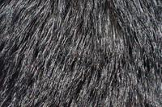
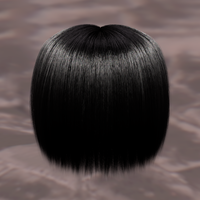
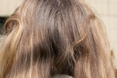
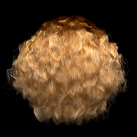
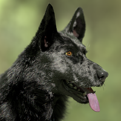
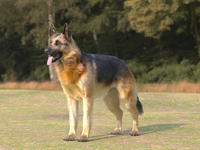

A Practical Wave Optics Reflection Model for Hair and Fur
Mengqi (Mandy) Xia1,2,
Bruce Walter1,
Christophe Hery3,
Olivier Maury3,
Eric Michielssen4,
Steve Marschner1
1Cornell University, 2EPFL, 3Meta Reality Labs, 4University of Michigan
ACM Transactions on Graphics (SIGGRAPH 2023)

Abstract
Traditional fiber scattering models, based on ray optics, are missing some important visual aspects of fiber appearance. Previous work [Xia et al. 2020] on wave scattering from ideal extrusions demonstrated that diffraction produces strong forward scattering and colorful effects that are missing from ray-based models. However, that work was unable to include some important surface characteristics
such as surface roughness and tilted cuticle scales, which are known to be important for fiber appearance. In this work, we take an important step to study wave effects from rough fibers with arbitrary 3D microgeometry. While the full-wave simulation of realistic 3D fibers remains intractable, we developed a 3D wave optics simulator based on a physical optics approximation, using a GPU-based hierarchical algorithm to greatly
accelerate the calculation. It simulates surface reflection and diffractive scattering, which are present in all fibers and typically dominate for darkly pigmented fibers. The simulation provides a detailed picture of first order scattering, but it is not practical to use for production rendering as this would require tabulation per fiber geometry. To practically handle geometry variations in the scene,
we propose a model based on wavelet noise, capturing the important statistical features in the simulation results that are relevant for rendering. Both our simulation and practical model show similar granular patterns to those observed in optical measurement. Our compact noise model can be easily combined with existing scattering models to render hair and fur of various colors,
introducing visually important colorful glints that were missing from all previous models.
Video
Interactive image gallery

Black hair (photo)
Black hair (photo)

Black hair (render)
Black hair (render)

Blonde hair (photo)
Blonde hair (photo)

Blonde hair (render)
Blonde hair (render)

Black fur (render)
Black fur (render)

German Shepherd
German Shepherd
Our interactive image gallery features realistic renderings of hair and fur. Each thumbnail corresponds to a separate webpage. As you hover over the main image on most of the individual webpages, inset images will appear, providing a closer look at the details of colored glints. You can easily zoom in and out on the inset images using the '+' and '-' keys on your keyboard. Enjoy the beauty of colorful glints!
Acknowledgement
The authors would like to thank Ningwei Ma for helping with Figure 10 in the main paper, and Peimeng Sui and Anastasia Remizova for the hair photos.
The interactive image gallery is adapated from the interactive viewer of the paper Reversible Jump Metropolis Light Transport using Inverse Mappings.
This work was supported by the National Science Foundation under grant IIS-1909467.